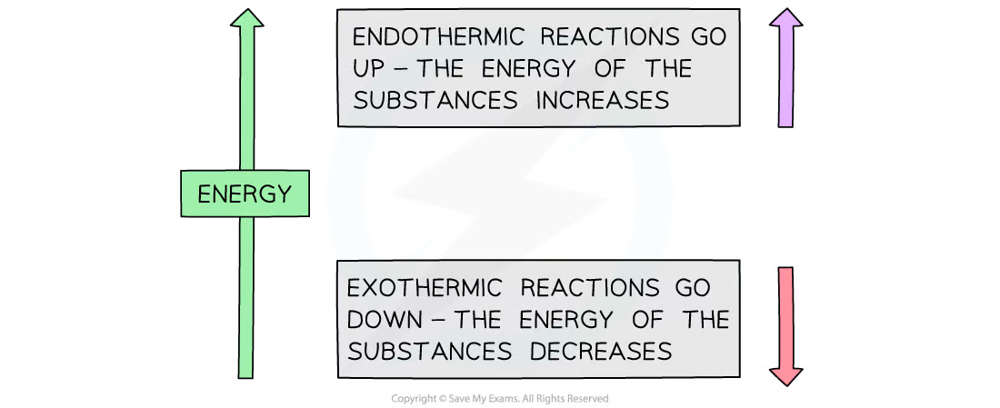
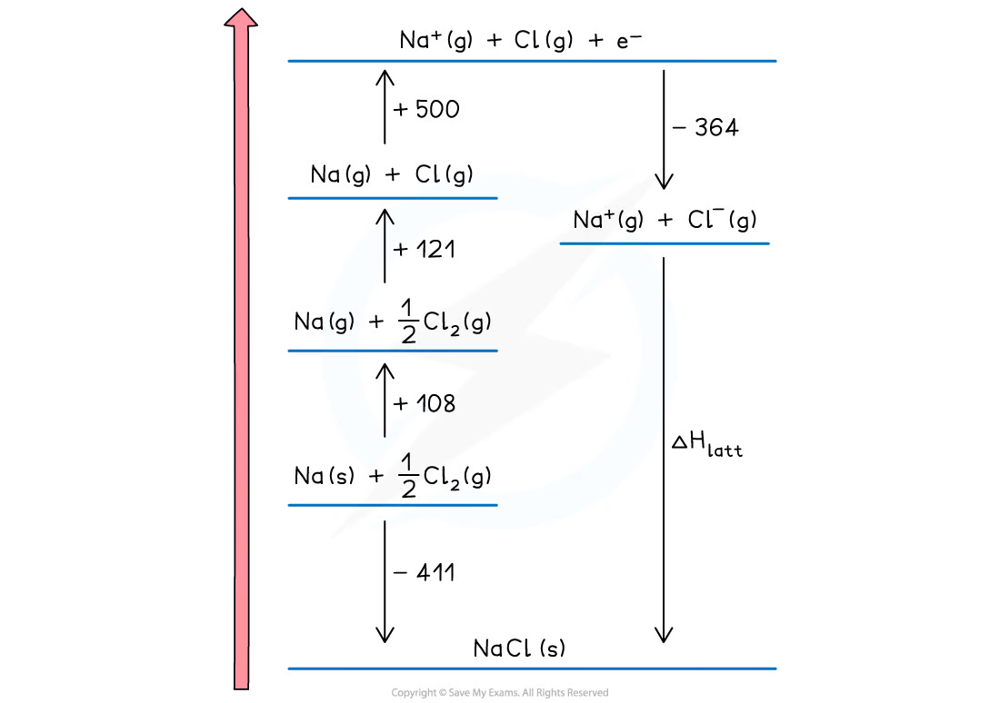
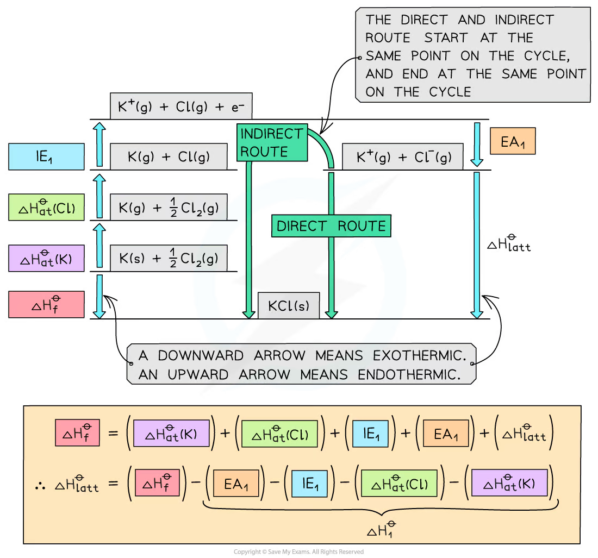
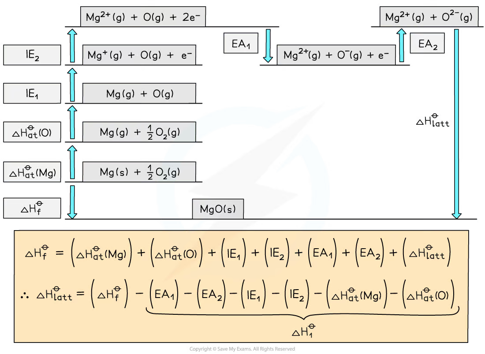
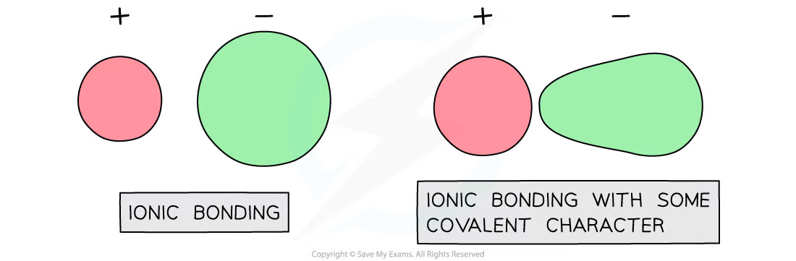
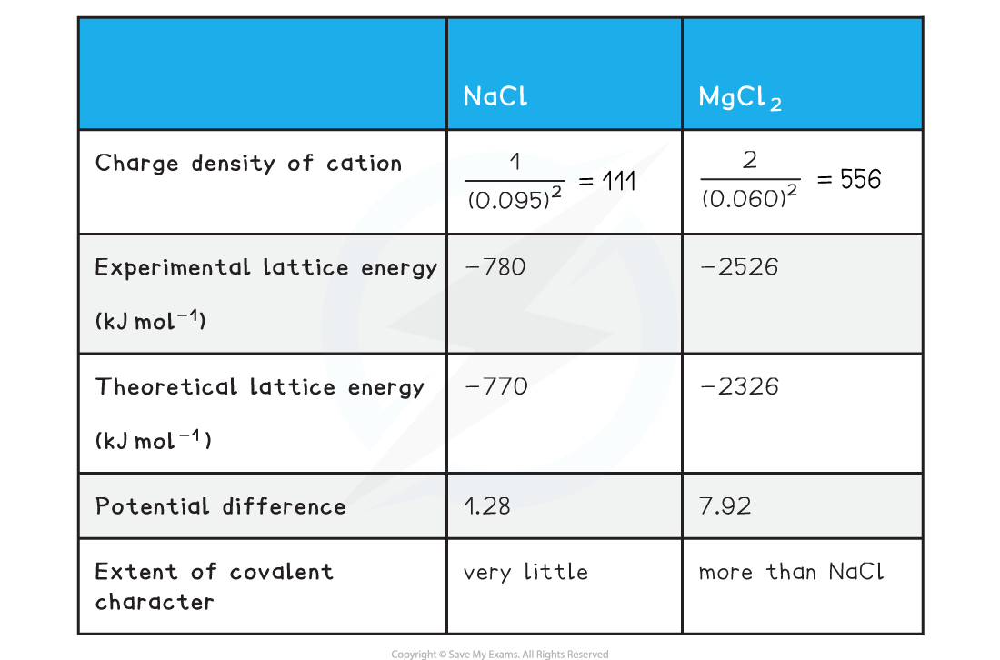
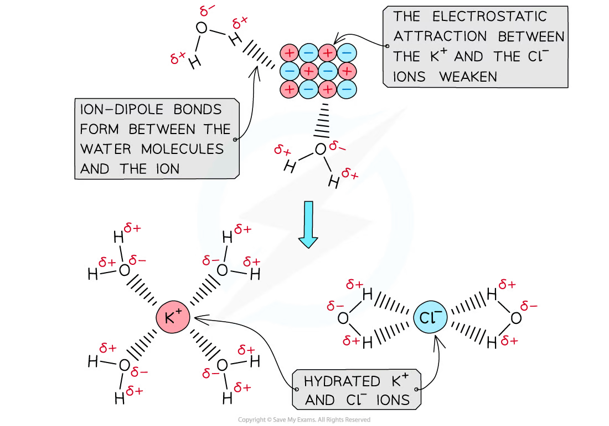
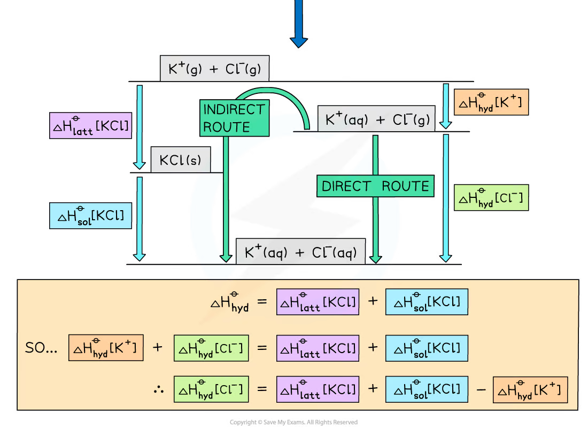
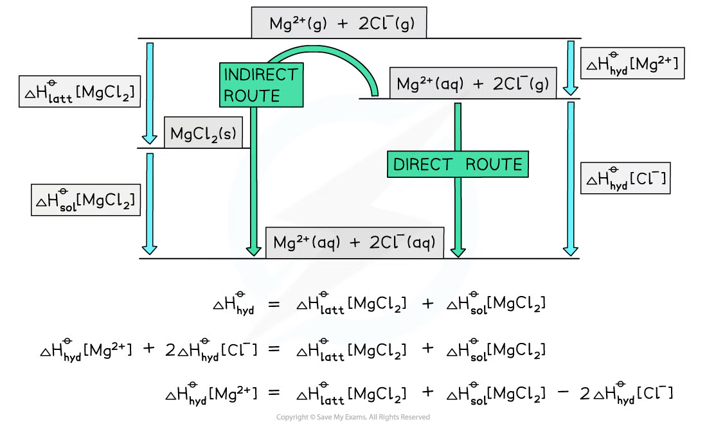
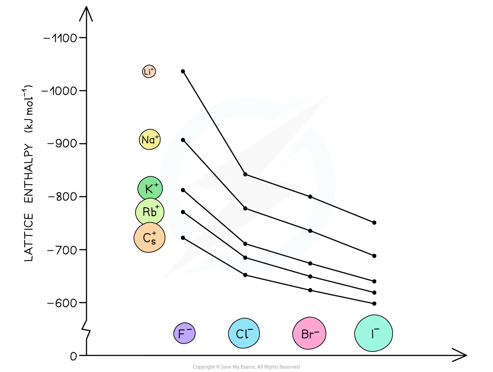

4.3 Energetics · Topic 12B
Lattice energy, Born-Haber cycles, hydration and solubility
4.3 Energetics · Topic 12B
本页严格按 Pearson Edexcel International Advanced Level Chemistry specification 的 Topic 12B: Lattice energy 编排，内容来自项目内的 `4.3 Energetics.pdf.pdf`。解释采用中文，专业词汇保留 English，便于和 specification、Data Booklet 及 exam wording 对照。
Learning objectives
学完本章后，你应该能够：
- define lattice energy、standard enthalpy change of atomisation、electron affinity、enthalpy of solution 和 enthalpy of hydration；
- construct Born-Haber cycle，并使用 Hess’ Law 计算 lattice energy；
- compare theoretical 与 experimental lattice energy，解释 covalent character 和 polarisation；
- explain ionic charge 与 ionic radius 对 lattice energy 和 hydration enthalpy 的影响；
- construct energy cycles / energy level diagrams 计算 enthalpy of solution 和未知 hydration enthalpy；
- use entropy and enthalpy of solution 判断 ionic compound 的 solubility；
- 处理含有 stoichiometric coefficients 的 KCl、MgO、MgCl\(_2\) 等 calculation。
12.12 Key terms
Lattice energy
Edexcel 对 lattice energy / lattice enthalpy 的定义是：
the enthalpy change when one mole of an ionic solid is formed from its gaseous ions under standard conditions.
Formation process 的 equation 例如：
\[ \ce{Na+(g) + Cl-(g) -> NaCl(s)} \]
Formation lattice energy 通常是 very large negative value，因为 oppositely charged gaseous ions 形成 ionic lattice 时，strong electrostatic attractions 释放大量 energy。
Lattice energy 越 negative，通常表示 ionic lattice 中的 electrostatic attraction 越强、solid 越 stable。Lattice energy 不能通过 single direct experiment 直接测得，通常使用 Born-Haber cycle 间接求出。
Dissociation convention
有些资料也把 lattice energy 写成 dissociation process：
\[ \ce{NaCl(s) -> Na+(g) + Cl-(g)} \]
此时 value 为 positive，且与 formation lattice energy 大小相等、符号相反。考试时必须根据题目给出的 definition 判断 sign。
Standard enthalpy change of atomisation
Standard enthalpy change of atomisation, \(\Delta_{\mathrm{at}}H^\circ\)，是：
the enthalpy change when one mole of gaseous atoms is formed from an element in its standard state.
该 process 总是需要 break bonds，因此为 endothermic、value 为 positive。
Examples：
\[ \ce{Na(s) -> Na(g)} \]
\[ \ce{\frac{1}{2}Cl2(g) -> Cl(g)} \]
注意：equation 必须生成 one mole of gaseous atoms。因此 chlorine 使用 \(\frac{1}{2}\ce{Cl2(g)}\)，而不是 \(\ce{Cl2(g)}\)。
Electron affinity
First electron affinity, \(\Delta_{\mathrm{ea1}}H^\circ\)，是 one mole gaseous atoms 各获得 one electron，形成 one mole gaseous \(1-\) ions 的 enthalpy change：
\[ \ce{Cl(g) + e- -> Cl-(g)} \]
First electron affinity 通常是 exothermic，因为 electron 受到 positive nucleus attraction。
Second electron affinity 可能是 endothermic：
\[ \ce{O-(g) + e- -> O^{2-}(g)} \]
需要把 electron 加入已经带负电的 ion，必须克服 electron-electron repulsion，所以会吸收 energy。Born-Haber cycle 中必须使用正确的 electron affinity，并根据 stoichiometry 乘以对应 coefficient。
12.13 Born-Haber cycles
What is a Born-Haber cycle?
Born-Haber cycle 是 Hess’ Law 对 ionic compound 的具体应用。它把：
- elements in their standard states；
- gaseous atoms；
- gaseous ions；
- ionic solid
连接成两个 routes。因为 Hess’ Law，direct route 和 indirect route 的 total enthalpy change 相同。
绘图原则：
- endothermic change：energy level 向上；
- exothermic change：energy level 向下；
- gaseous ions 位于 cycle 顶部；
- ionic solid 通常位于底部；
- elements in standard states 是 formation route 的起点。

Steps in a NaCl Born-Haber cycle
以 \(\ce{NaCl(s)}\) 为例，indirect route 通常包括：
- formation of elements in standard states；
- atomisation of sodium；
- atomisation of chlorine；
- first ionisation energy of sodium；
- first electron affinity of chlorine；
- formation lattice energy。
关键 equations：
\[ \ce{Na(s) -> Na(g)} \]
\[ \ce{\frac{1}{2}Cl2(g) -> Cl(g)} \]
\[ \ce{Na(g) -> Na+(g) + e-} \]
\[ \ce{Cl(g) + e- -> Cl-(g)} \]
\[ \ce{Na+(g) + Cl-(g) -> NaCl(s)} \]

Born-Haber calculation structure
令 \(\Delta H_{\mathrm{atomisation}}\)、ionisation energies 和 electron affinities 的总和为 \(\Delta H_{\mathrm{gaseous\ ions}}\)：
\[ \Delta H_f^\circ =\Delta H_{\mathrm{gaseous\ ions}} +\Delta H_{\mathrm{latt}}^\circ \]
因此：
\[ \Delta H_{\mathrm{latt}}^\circ =\Delta H_f^\circ-\Delta H_{\mathrm{gaseous\ ions}} \]
直接 route 和 indirect route 必须从同一个 starting point 出发，并在同一个 ending point 汇合。这样可以避免漏掉 \(\frac{1}{2}\)、2 或其他 stoichiometric coefficient。

Worked example · lattice energy of KCl
已知：
\[ \Delta H_f^\circ[\ce{KCl(s)}]=-437\ \mathrm{kJ\,mol^{-1}} \]
\[ \Delta_{\mathrm{at}}H^\circ[\ce{K}]=+90,\quad \Delta_{\mathrm{at}}H^\circ[\ce{Cl}]=+122 \]
\[ \mathrm{IE}_1[\ce{K}]=+418,\qquad \mathrm{EA}_1[\ce{Cl}]=-349 \]
先求 gaseous ions route：
\[ \Delta H_{\mathrm{gaseous\ ions}} =90+122+418-349 =281\ \mathrm{kJ\,mol^{-1}} \]
然后使用 Hess’ Law：
\[ \Delta H_{\mathrm{latt}}^\circ =-437-281 =-718\ \mathrm{kJ\,mol^{-1}} \]
Answer： \(\Delta H_{\mathrm{latt}}^\circ[\ce{KCl}]=-718\ \mathrm{kJ\,mol^{-1}}\)。
Higher ionic charges: MgO
对于 \(\ce{MgO}\)，cycle 中必须包括：
- \(\mathrm{IE}_1[\ce{Mg}]\) 和 \(\mathrm{IE}_2[\ce{Mg}]\)；
- \(\Delta_{\mathrm{ea1}}H^\circ[\ce{O}]\) 和 \(\Delta_{\mathrm{ea2}}H^\circ[\ce{O}]\)；
- one mole \(\ce{O2(g)}\) 形成 two moles gaseous O atoms，因此需要正确处理 atomisation coefficient。

Worked example · lattice energy of MgO
已知：
\[ \Delta H_f^\circ[\ce{MgO(s)}]=-602 \]
\[ \Delta_{\mathrm{at}}H^\circ[\ce{Mg}]=148,\quad \Delta_{\mathrm{at}}H^\circ[\ce{O}]=248 \]
\[ \mathrm{IE}_1=736,\quad \mathrm{IE}_2=1450,\quad \mathrm{EA}_1=-142,\quad \mathrm{EA}_2=+770 \]
\[ \Delta H_{\mathrm{gaseous\ ions}} =148+248+736+1450-142+770 =3210\ \mathrm{kJ\,mol^{-1}} \]
\[ \Delta H_{\mathrm{latt}}^\circ =-602-3210 =-3812\ \mathrm{kJ\,mol^{-1}} \]
Answer： \(\Delta H_{\mathrm{latt}}^\circ[\ce{MgO}]=-3812\ \mathrm{kJ\,mol^{-1}}\)。
12.14-12.15 Polarisation and covalent character
The ionic model and polarisation
Theoretical lattice energy 通常假设 perfect ionic model：ions 是 spherical，electron transfer 完全且 irreversible，attractions 纯粹来自 electrostatic forces。
如果 experimental lattice energy 与 theoretical value 有明显 difference，说明 ionic bond 中存在一定 covalent character。原因是 cation 会吸引并 distort anion 的 electron density，这个过程叫 polarisation。
- Polarising power：cation 使 anion 发生 distortion 的能力；
- Polarisability：anion 被 distortion 的容易程度。

Factors affecting polarisation
Cation 的 polarising power 增加，当：
- cation ionic radius 更小；
- cation charge 更大；
- charge density 更高。
Anion 的 polarisability 增加，当：
- anion ionic radius 更大；
- outer electron cloud 更容易被 distort。
因此 \(\ce{Li+}\) 比 \(\ce{K+}\) 更 polarising，\(\ce{Mg^{2+}}\) 比 \(\ce{Na+}\) 更 polarising；\(\ce{Br-}\) 比 \(\ce{Cl-}\) 更 polarisable。
一个 rough approximation 是：
\[ \text{charge density}\propto\frac{\text{charge}}{r^2} \]
实际比较时还要使用题目给出的 data 和 experimental / theoretical lattice energy。

12.16-12.17 Enthalpy of solution and hydration
Enthalpy of solution
Standard enthalpy change of solution, \(\Delta_{\mathrm{sol}}H^\circ\)，是：
the enthalpy change when one mole of an ionic substance dissolves in sufficient water to form an infinitely dilute solution.
例如：
\[ \ce{KCl(s) -> KCl(aq)} \]
或写成 ions：
\[ \ce{KCl(s) -> K+(aq) + Cl-(aq)} \]
\(\Delta_{\mathrm{sol}}H^\circ\) 可以是 positive 或 negative。
Enthalpy of hydration
Standard enthalpy change of hydration, \(\Delta_{\mathrm{hyd}}H^\circ\)，是：
the enthalpy change when one mole of a specified gaseous ion dissolves in sufficient water to form an infinitely dilute solution.
例如：
\[ \ce{Mg^{2+}(g) -> Mg^{2+}(aq)} \]
Hydration 过程中，water molecules 与 ion 形成 ion-dipole attractions，因此 hydration enthalpies 通常是 exothermic。
Water 是 polar molecule：oxygen 端带 \(\delta-\)，hydrogen 端带 \(\delta+\)。因此：
- cation 吸引 water 的 oxygen；
- anion 吸引 water 的 hydrogen。

Enthalpy of solution cycle
从 ionic solid 到 aqueous ions 有两条 route：
- indirect route：lattice 分解，再 hydration；
- direct route：solid 直接 dissolve 成 aqueous ions。
因此：
\[ \Delta H_{\mathrm{sol}}^\circ =\Delta H_{\mathrm{latt,diss}}^\circ +\sum\Delta H_{\mathrm{hyd}}^\circ \]
如果使用 formation lattice energy：
\[ \Delta H_{\mathrm{latt,diss}}^\circ =-\Delta H_{\mathrm{latt,form}}^\circ \]
每个 ion 都有自己的 hydration enthalpy，且必须按 stoichiometric coefficient 相加。
KCl energy cycle
KCl 的 solution cycle 可用来求 unknown \(\Delta_{\mathrm{hyd}}H^\circ[\ce{Cl-}]\)：
\[ \Delta H_{\mathrm{hyd}}^\circ[\ce{K+}] +\Delta H_{\mathrm{hyd}}^\circ[\ce{Cl-}] =\Delta H_{\mathrm{latt}}^\circ[\ce{KCl}] +\Delta H_{\mathrm{sol}}^\circ[\ce{KCl}] \]

Worked example · hydration enthalpy of chloride ion
已知：
\[ \Delta H_{\mathrm{latt}}^\circ[\ce{KCl}]=-711,\quad \Delta H_{\mathrm{sol}}^\circ[\ce{KCl}]=+26 \]
\[ \Delta H_{\mathrm{hyd}}^\circ[\ce{K+}]=-322 \quad \mathrm{kJ\,mol^{-1}} \]
\[ \Delta H_{\mathrm{hyd}}^\circ[\ce{Cl-}] =\Delta H_{\mathrm{latt}}^\circ+\Delta H_{\mathrm{sol}}^\circ -\Delta H_{\mathrm{hyd}}^\circ[\ce{K+}] \]
\[ =(-711)+(+26)-(-322) =-363\ \mathrm{kJ\,mol^{-1}} \]
Answer： \(\Delta H_{\mathrm{hyd}}^\circ[\ce{Cl-}]=-363\ \mathrm{kJ\,mol^{-1}}\)。
MgCl\(_2\) and stoichiometry
对于 \(\ce{MgCl2}\)，solution cycle 中有 two moles \(\ce{Cl-}\)，所以：
\[ \Delta H_{\mathrm{hyd}}^\circ[\ce{Mg^{2+}}] +2\Delta H_{\mathrm{hyd}}^\circ[\ce{Cl-}] =\Delta H_{\mathrm{latt}}^\circ[\ce{MgCl2}] +\Delta H_{\mathrm{sol}}^\circ[\ce{MgCl2}] \]

Worked example · hydration enthalpy of magnesium ion
Given：
\[ \Delta H_{\mathrm{latt}}^\circ[\ce{MgCl2}]=-2592,\quad \Delta H_{\mathrm{sol}}^\circ[\ce{MgCl2}]=-55 \]
\[ \Delta H_{\mathrm{hyd}}^\circ[\ce{Cl-}]=-363 \quad \mathrm{kJ\,mol^{-1}} \]
\[ \begin{aligned} \Delta H_{\mathrm{hyd}}^\circ[\ce{Mg^{2+}}] &=(-2592)+(-55)-2(-363)\\ &=-1921\ \mathrm{kJ\,mol^{-1}} \end{aligned} \]
关键是不要漏掉 \(\ce{Cl-}\) 的 coefficient 2。
12.18 Ionic charge and ionic radius
Lattice energy trends
Lattice energy 受 ionic charge 和 ionic radius 两个主要因素影响。
Ionic radius 越大：
- ion centres 距离更远；
- charge density 更低；
- electrostatic attraction 更弱；
- lattice energy less exothermic。
例如，\(\ce{CsF}\) 的 lattice energy 比 \(\ce{KF}\) less exothermic，因为 \(\ce{Cs+}\) radius 比 \(\ce{K+}\) 大。
Ionic charge 越大：
- charge density 更高；
- electrostatic attraction 更强；
- lattice energy more exothermic。
因此 \(\ce{CaO}\) 的 lattice energy 比 \(\ce{KCl}\) more exothermic；\(\ce{Ca^{2+}}\) 和 \(\ce{O^{2-}}\) 的 charges 更高，且 ions 更小。

Hydration enthalpy trends
Hydration enthalpy 通常是 exothermic，因为 ion 与 polar water molecules 形成 attractions。
Charge density 越高，ion 对 water molecules 的 attraction 越强，hydration enthalpy 越 negative。Charge density 在以下情况下更高：
- ionic radius 更小；
- ionic charge 更大。
因此：
- \(\ce{F-}\) 的 hydration enthalpy 比 \(\ce{Cl-}\) more negative；
- \(\ce{Mg^{2+}}\) 的 hydration enthalpy 比 \(\ce{Ba^{2+}}\) more negative。
12.19 Solubility of ionic compounds
Predicting solubility
Ionic compound dissolving 时需要同时考虑：
- breaking the ionic lattice：endothermic，增加 system particles 的 disorder；
- hydrating ions：exothermic，但 water molecules around ions 会变得更 ordered。
因此 solubility 不能只由 lattice energy 或 \(\Delta H_{\mathrm{sol}}\) 单独决定。需要考虑：
\[ \Delta S_{\mathrm{total}} =\Delta S_{\mathrm{system}} +\Delta S_{\mathrm{surroundings}} \]
又因为：
\[ \Delta S_{\mathrm{surroundings}} =-\frac{\Delta H_{\mathrm{sol}}}{T} \]
所以 solubility 与三个因素有关：
- \(\Delta S_{\mathrm{system}}\)；
- \(\Delta H_{\mathrm{sol}}\)；
- temperature \(T\)。
Worked example · solubility of ammonium nitrate
对于：
\[ \ce{NH4NO3(s) -> NH4+(aq) + NO3-(aq)} \]
在 \(298\ \mathrm{K}\)：
\[ \Delta H_{\mathrm{sol}}=+25.8\ \mathrm{kJ\,mol^{-1}} \]
\[ \Delta S_{\mathrm{system}}=+108.7\ \mathrm{J\,K^{-1}\,mol^{-1}} \]
先计算 surroundings：
\[ \Delta S_{\mathrm{surroundings}} =-\frac{25800}{298} =-86.6\ \mathrm{J\,K^{-1}\,mol^{-1}} \]
然后：
\[ \Delta S_{\mathrm{total}} =108.7-86.6 =+22.1\ \mathrm{J\,K^{-1}\,mol^{-1}} \]
因为 \(\Delta S_{\mathrm{total}}>0\)，dissolving 在 \(298\ \mathrm{K}\) 下 thermodynamically spontaneous。若 activation energy 也较低，则可以观察到 ammonium nitrate soluble。
Exam checklist
Source note
本页章节素材来自项目内的 `Note per Chapter/Note per Chapter/4.3 Energetics.pdf.pdf`；考纲校对来自 `International-A-Level-Chemistry-Spec.pdf` 的 Topic 12B: Lattice energy。图像已从 PDF 内嵌对象独立提取并存放在 `assets/notes/energetics/`。